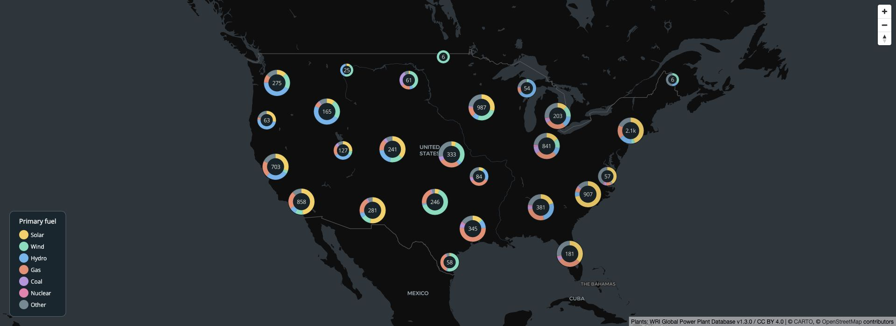
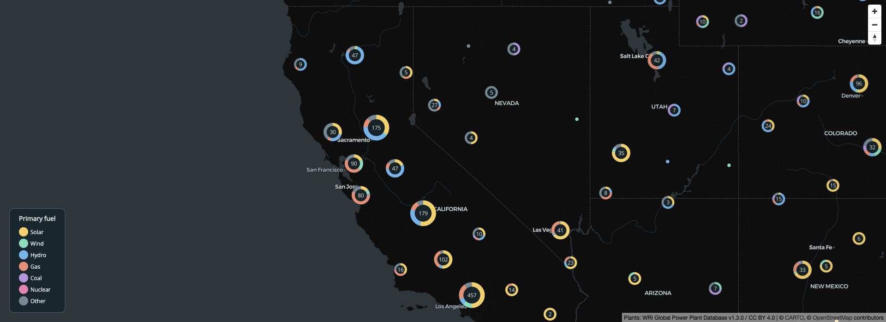

install.packages(
"freestiler",
repos = c("https://walkerke.r-universe.dev", "https://cloud.r-project.org")
)
install.packages(c("mapgl", "sf", "sfarrow", "jsonlite", "httpuv"))Let’s make a map of US power plants where each cluster is a donut chart showing the mix of fuel types. freestiler builds the clusters and category counts into PMTiles; mapgl draws the donuts from those tile properties. The browser only downloads the tiles in view.
This example uses the Global Power Plant Database from the World Resources Institute and partners, licensed under CC BY 4.0. The download is pinned to a snapshot of version 1.3.0. It is a historical inventory, not a current list of operating plants. Each point counts as one plant, regardless of capacity.

Install the packages
Categorical file clustering needs freestiler 0.3.0 or later from R-Universe. Donut charts need mapgl 0.5.2 or later. Restart R before replacing an existing installation:
Run the following sections in order in the same R session. sfarrow writes a GeoParquet file with the geometry and CRS metadata the tiler needs. No API key is required.
Download and prepare the points
library(sf)
library(freestiler)
library(mapgl)
dir.create("power-plant-demo", showWarnings = FALSE)
csv_path <- "power-plant-demo/power-plants.csv"
data_url <- paste0(
"https://raw.githubusercontent.com/wri/global-power-plant-database/",
"7a91cfbb2a4e272597acbc00506d61fc1ec73b3d/",
"output_database/global_power_plant_database.csv"
)
download.file(data_url, csv_path, mode = "wb")
plants <- read.csv(csv_path)
# Keep the contiguous US and the attributes used in the map.
plants <- subset(
plants,
country == "USA" & longitude > -126 & longitude < -66 &
latitude > 24 & latitude < 50,
select = c(gppd_idnr, name, primary_fuel, longitude, latitude)
)
plants <- plants[order(plants$gppd_idnr), ]
fuels <- c("Solar", "Wind", "Hydro", "Gas", "Coal", "Nuclear", "Other")
plants$fuel <- ifelse(plants$primary_fuel %in% fuels, plants$primary_fuel, "Other")
plants <- st_as_sf(plants, coords = c("longitude", "latitude"), crs = 4326)
sfarrow::st_write_parquet(plants, "power-plant-demo/plants.parquet")This leaves 9,581 plants. Sorting by plant ID fixes the input order, which matters for reproducible cluster membership. The fuel groups and their order will be shared by the tiler, the donut charts, and the legend.
Build the tiles
freestile_file(
"power-plant-demo/plants.parquet",
"power-plant-demo/clusters.pmtiles",
layer_name = "plants",
min_zoom = 0,
max_zoom = 9,
cluster_distance = 60,
cluster_maxzoom = 9,
category = "fuel",
category_values = fuels
)
# A separate point archive supplies the close-up view at zoom 10 and above.
freestile(
plants, "power-plant-demo/points.pmtiles",
layer_name = "plants", min_zoom = 10, max_zoom = 14
)Every cluster carries point_count and counts named fuel:Solar, fuel:Wind, and so on. These are plant counts, not megawatts or electricity generation. Isolated plants retain their name and other original attributes.
Draw donut charts with mapgl
colors <- c("#f9cf58", "#71debd", "#64b5ee", "#f18c70", "#bb95df", "#ef7daf", "#728a94")
fuel_color <- match_expr("fuel", values = fuels, stops = colors, default = "#728a94")
# Keep this R session running while viewing the map.
serve_tiles("power-plant-demo", port = 8082)
plant_map <- maplibre(
style = carto_style("dark-matter"),
center = c(-98, 38.5), zoom = 3.5,
projection = "mercator", height = 700,
attributionControl = list(customAttribution = "Plants: WRI Global Power Plant Database v1.3.0 / CC BY 4.0")
) |>
add_pmtiles_source(
"plant-clusters", "http://localhost:8082/clusters.pmtiles", maxzoom = 9
) |>
add_pmtiles_source(
"plant-points", "http://localhost:8082/points.pmtiles", minzoom = 10, maxzoom = 14
) |>
add_circle_layer(
"plants", source = "plant-clusters", source_layer = "plants",
max_zoom = 10,
circle_color = fuel_color, circle_radius = 4,
popup = "name",
cluster_options = cluster_options(
max_zoom = 9,
donut_column = "fuel", donut_values = fuels, donut_colors = colors,
radius_stops = c(14, 20, 28), count_stops = c(0, 30, 150),
donut_width = 0.35, donut_fill = "#142329", text_color = "#f6f4e9",
circle_stroke_color = "#10191e"
)
) |>
add_circle_layer(
"plant-details", source = "plant-points", source_layer = "plants",
min_zoom = 10,
circle_color = fuel_color, circle_radius = 5,
circle_stroke_color = "white", circle_stroke_width = 1,
popup = "name"
) |>
add_categorical_legend(
"Primary fuel", values = fuels, colors = colors,
position = "bottom-left", patch_shape = "circle",
style = legend_style(
background_color = "#16262e", text_color = "#e7efef",
title_color = "white", border_color = "#52616a"
)
) |>
add_navigation_control()
plant_mapThe number inside each donut is the number of plants. Its slices show their fuel mix. Because source names a PMTiles source, mapgl uses the clusters freestiler already computed. Passing an sf object as source would instead ask the browser to cluster the points.
Zoom in to see the regional differences. At zoom 10 the map switches to the separate point archive, where you can click individual plants for their names.

When finished, stop the tile server with stop_server(port = 8082).
Build the same clusters in Python
The Python package includes native GeoParquet input. Install the packages, then run this standalone version of the download and tiling steps:
pip install freestiler geopandas pyarrowfrom pathlib import Path
import pandas as pd
import geopandas as gpd
from freestiler import freestile, freestile_file
folder = Path("power-plant-demo")
folder.mkdir(exist_ok=True)
data_url = (
"https://raw.githubusercontent.com/wri/global-power-plant-database/"
"7a91cfbb2a4e272597acbc00506d61fc1ec73b3d/"
"output_database/global_power_plant_database.csv"
)
plants = pd.read_csv(data_url, low_memory=False)
plants = plants.loc[
(plants.country == "USA") & plants.longitude.between(-126, -66, inclusive="neither")
& plants.latitude.between(24, 50, inclusive="neither"),
["gppd_idnr", "name", "primary_fuel", "longitude", "latitude"],
].sort_values("gppd_idnr")
fuels = ["Solar", "Wind", "Hydro", "Gas", "Coal", "Nuclear", "Other"]
plants["fuel"] = plants.primary_fuel.where(plants.primary_fuel.isin(fuels), "Other")
plants = gpd.GeoDataFrame(
plants, geometry=gpd.points_from_xy(plants.longitude, plants.latitude), crs=4326
).drop(columns=["longitude", "latitude"])
plants.to_parquet(folder / "plants.parquet", index=False)
freestile_file(
folder / "plants.parquet", folder / "clusters.pmtiles",
layer_name="plants", min_zoom=0, max_zoom=9,
cluster_distance=60, cluster_maxzoom=9,
category="fuel", category_values=fuels,
)
freestile(
plants, folder / "points.pmtiles", layer_name="plants", min_zoom=10, max_zoom=14
)These archives can be viewed with the R map code above; load freestiler and mapgl and define fuels first. The Python article also covers serving PMTiles for other viewers.
Properties in the tiles
| Property | Meaning |
|---|---|
cluster |
true for a cluster; absent on a singleton. |
cluster_id |
Identifier for a cluster. |
point_count |
Total number of input points in the cluster. |
point_count_abbreviated |
Abbreviated count for labels, such as "1.2k". |
cluster_expansion_zoom |
Zoom level where the cluster splits, useful for click-to-zoom. |
fuel:Solar, fuel:Wind, etc. |
Counts for the declared categories. |
fuel:_other |
Count of missing or unlisted categories. |
The category counts sum to point_count. Divide a category count by point_count to calculate its share. Singletons retain their original attributes and category counts, but have no point_count property. Clusters do not inherit an arbitrary member’s attributes, such as its name.
The example explicitly groups less common fuels into "Other", so those counts live in fuel:Other. The separate fuel:_other field is for values outside the declared dictionary. Zero-count categories are retained.
Zooms and memory
Categorical file clustering is experimental in 0.3.0 and uses Supercluster 8.0.1. It requires WGS84 POINT GeoParquet input and a dictionary of 1 to 64 distinct strings or whole numbers. Its radius is measured against a 512-pixel tile, and changing the physical row order of the input file can change cluster membership.
Set cluster_maxzoom equal to max_zoom. Keep base_zoom unset and simplification at its default, and omit drop_rate and coalesce so all points contribute to the counts. The separate point archive above supplies the higher zooms.
The global clustering index stays in memory. Tile output and singleton attributes are stored on disk, but this is not the streaming query pipeline. The input must contain fewer than 2^31 rows. Select only the properties you need before creating the input file.
If you only need ordinary count clusters, freestile(plants, "ordinary.pmtiles", cluster_distance = 50, cluster_maxzoom = 9) uses the existing clustering path and works with the CRAN build. For summaries on a fixed grid, including the most common category and its share, use H3 binning.